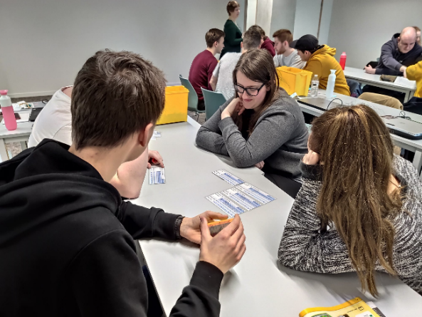

Omschrijving
Dit seminarie ging over Agile. Agile organiseren is een manier van denken, werken en organiseren. Het stelt organisaties in staat om snel en effectief in te spelen op veranderingen in de buitenwereld. Om de agile principes toepasbaar te maken, zijn er een hele set aan werkwijzen beschikbaar, een werkwijze die ook uitgebreid aan bod kwam tijdens het seminarie was de Scrum methode. Dit werd zowel uitgelegd aan de hand van een presentatie als met een praktijk gedeelte.
Kern
Agile is een wereldwijde beweging die het bedrijfsleven aan het veranderen is. Het wordt meer en meer gebruikt en verspreidt zich nu snel naar alle types en onderdelen van organisaties. Dit seminarie begon dan ook met uit te leggen wat Agile precies inhoudt aan de hand van een theoretische presentatie. Hier werd ook scrum uitgelegd, dit is een flexibele manier van werken binnen agile waarbij er producten worden ontwikkeld en gemaakt binnen een team. Het werd al snel duidelijk dat agile een gegeven is dat veel voordelen met zich meebrengt binnen groepen bij het correct toepassen ervan.
Dit seminarie bestond uit 2 delen, een theoretisch gedeelte en een praktisch gedeelte. Het theoretische gedeelte nam de helft van de tijd in beslag en gaf een goed beeld van wat agile precies inhoudt. Het fundamentele gedeelte kwam aan bod maar er werd af en toe ook diep op ingegaan. De theorie werd ook uitgelegd aan de hand van echte voorbeelden vanuit het bedrijfsleven wat het ook meteen duidelijker maakt. Aangezien we agile al gezien hadden op school was dit toch nog een goede opfrissing. Er werd ons geleerd dat agile een flexibele strategie is dat zich binnen multidisciplinaire teams afspeelt. Ook de vier belangrijke kenmerken van agile organiseren zijn ons aangeleerd geweest: flexibele strategie, multidisciplinaire teams, korte cycli en visueel werken.
Tijdens de tweede helft van het seminarie gingen we hierop oefenen en werden we verdeeld in groepen van 5. Iedere groep kreeg een bak met legoblokken en een aantal kaartjes waarop voorwerpen of gebouwen stonden beschreven. De bedoeling was om zo snel mogelijk alle voorwerpen en gebouwen die beschreven stonden op de kaartjes te maken met de legoblokken en te overhandigen aan de klant. Dit over een aantal rondes. De kaartjes stellen de producten voor waar de klant naar gevraagd heeft. Elk product heeft ook een score, hoe hoger de score hoe belangrijker het product is. Wie op het einde de meeste punten had verzameld won het spel.
Op het eerste zicht leek dit een makkelijke opgave, al kwam er meer bij kijken. Zo was er maar een gelimiteerd aantal legoblokken beschikbaar per team en kan de klant zijn eisen veranderen. Er moest dus echt al team samengewerkt worden. Hier kwam het theoretische gedeelte van ervoor dus zeker goed van pas.
In het begin van de oefening ging het samenwerken niet zo vlot maar vanaf dat we volgens de agile methode begonnen te werken ging dit al veel beter. Zo namen we kaartjes samen die met dezelfde blokken gebouwd konden worden en verdeelden we onszelf op in kleinere teams waardoor de productiviteit omhoog ging. Er werd ook rekening gehouden met welke gebouwen er in welke ronde gemaakt zouden worden aangezien deze voor meer punten meetelden. We gingen ook vaker naar de klant toe bij vragen of voor verduidelijkingen waardoor we dadelijk juist te werk gingen volgens de eisen van de klant.
Ondanks we agile al gezien hadden op school was dit een goede verduidelijking van de leerstof. Agile toepassen op de praktijk heeft enorm veel geholpen om te laten zien dat agile daadwerkelijk helpt binnen teams.
Reflectie
Ik heb me voor dit seminarie ingeschreven omdat Agile een belangrijk aspect is dat ik tijdens mijn werkcarrier nog veel ga moeten gebruiken. Ook had ik al wat kennis en ervaring opgedaan over agile op school, toch heeft het ervoor gezorgd dat dit extra duidelijk werd. Ook heeft het me laten inzien dat agile echt werkt en de productiviteit verhoogd binnen teams. Ondanks dat ik Agile niet echt interessant vind ben ik toch blij dat ik dit seminarie heb gevolgd aangezien dit zeker zal helpen in de toekomst. Het seminarie was zeer interessant, de theorie leerde ons een goede basis, de voorbeelden uit het dagelijkse leven die werden aangehaald gingen hier nog wat dieper op in en de opdracht gaf ons een goede praktijkoefening. Al was de theorie soms wat saai en leek de praktijkoefening op het eerste gezicht wat kinderachtig, toch heeft het allemaal geholpen bij het aantonen van de voordelen van werken op een agile manier. De sessie zag ik meer als een uitbreiding van mijn kennis op vlak van werken in teams. Niet enkel het werken volgens de agile methode is verbeterd maar ook mijn soft skills. Zo hielp de praktische oefening mij om beter te communiceren tussen teamgenoten om zo het samenwerken te verbeteren. Deze kennis zal mij dus zeker bijblijven en helpen in de toekomst. Ik neem deze activiteit graag op in mijn portfolio aangezien dit een leuke maar ook interessante ervaring was. Agile en dus alsook dit seminarie heeft me ondertussen enorm geholpen met het IT project en mijn stage.